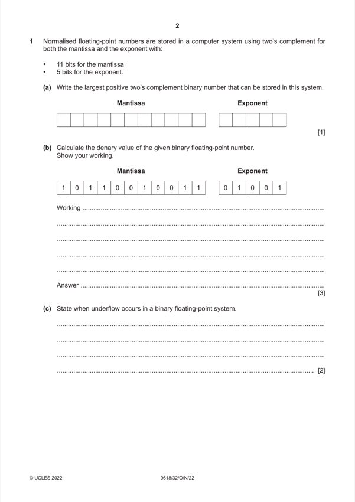
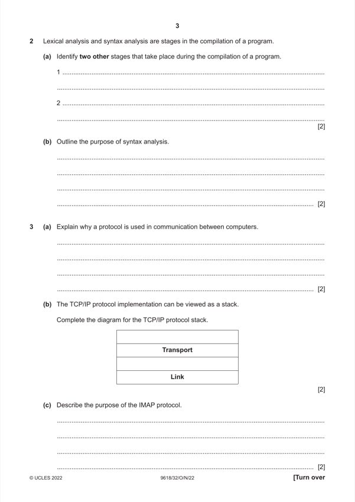
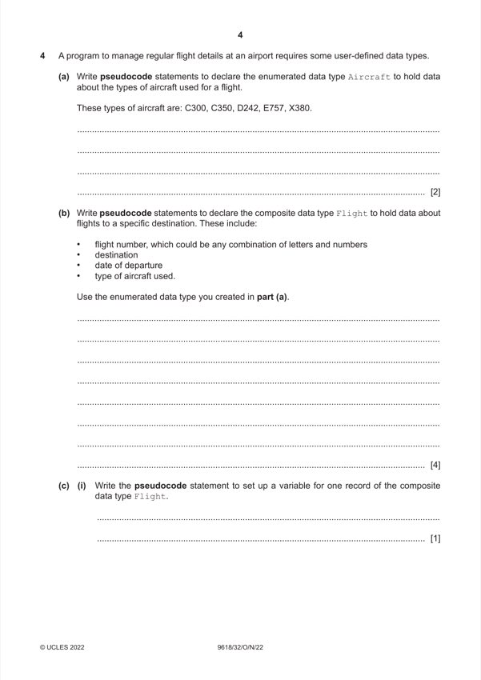
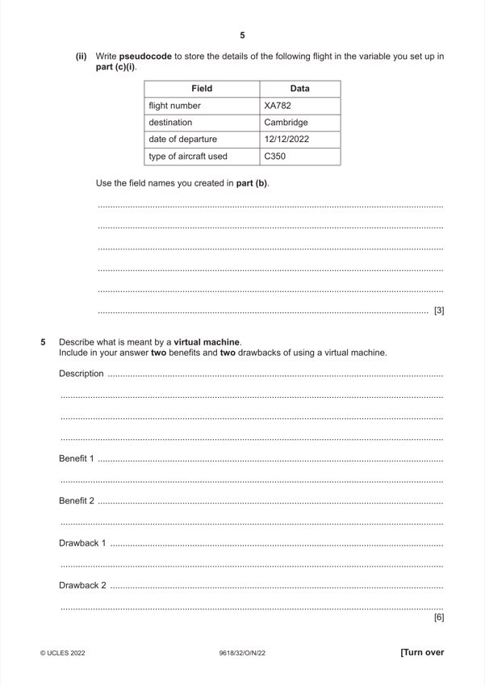
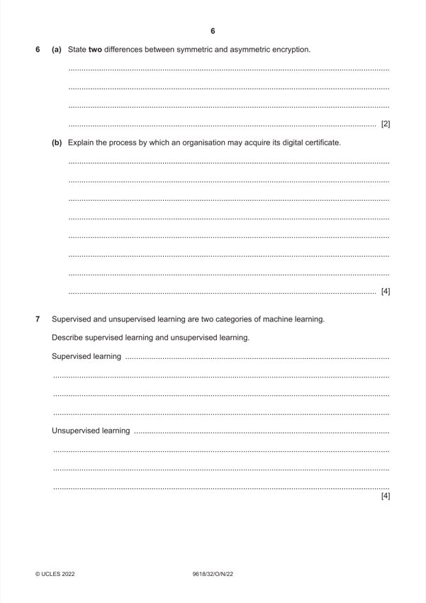
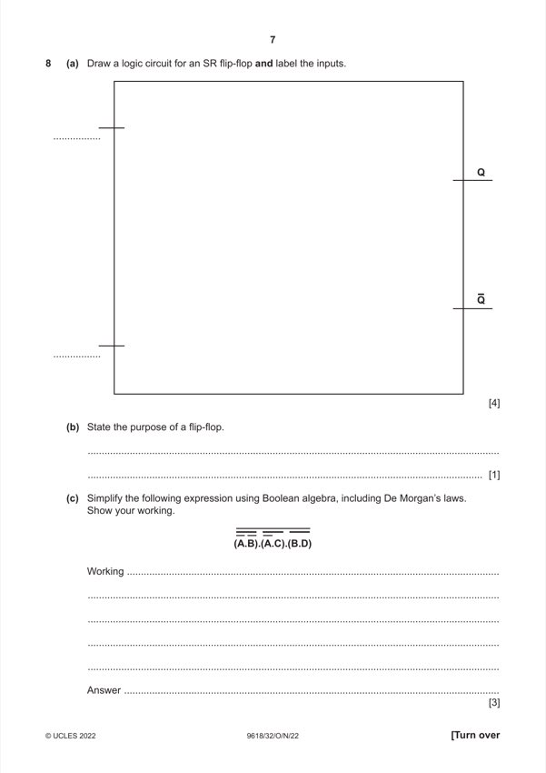
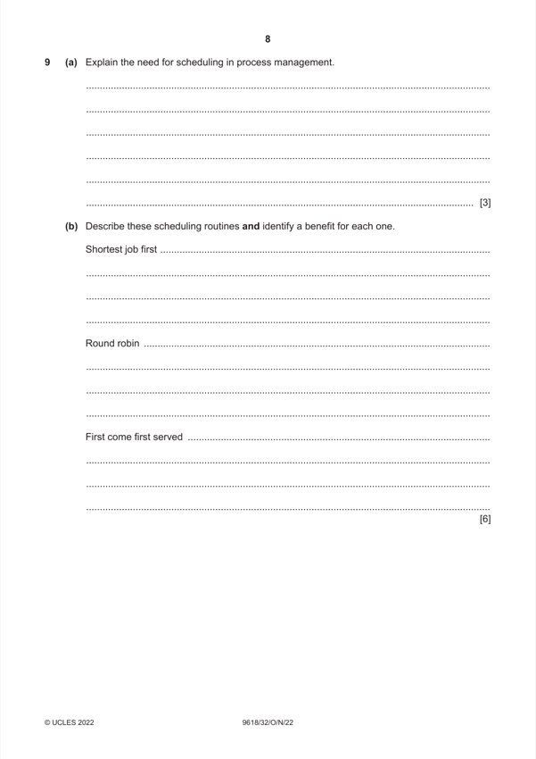
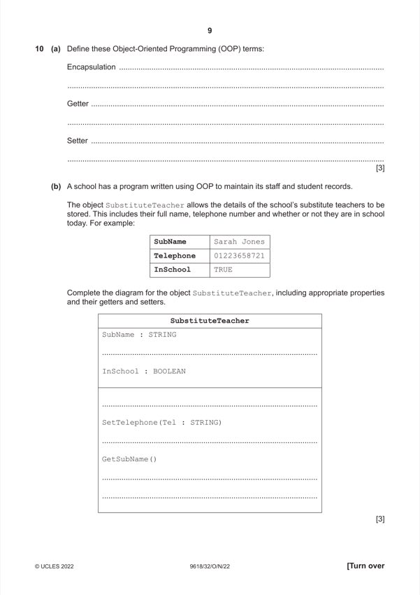
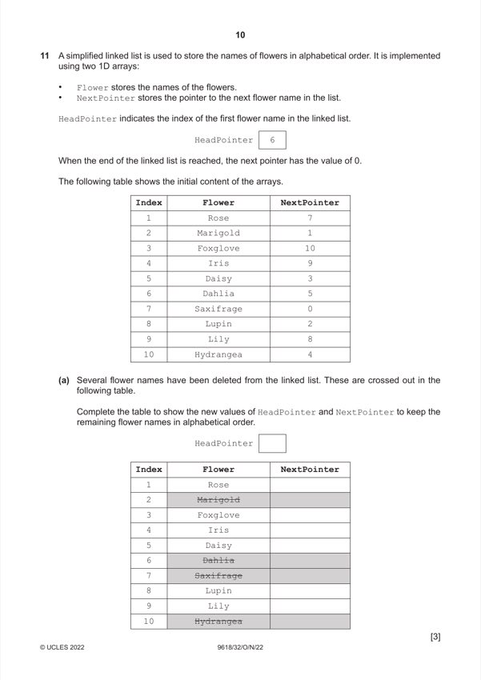

Question 0
Part 0 — solution
1 1 1 1 1 1 1 1 1 1 0 1 1 1 1
Mark points
- Include the ideas shown in the solution above.
Step-by-step solutions based on the mark scheme (not a mark-scheme dump).
Part 0 — solution

Part 1(a) — solution
Part 1(b) — solution
Part 1(c) — solution

Part 2(a) — solution
Part 2(b) — solution
Part 3(a) — solution
Part 3(b) — solution
Part 3(c) — solution

Part 4(a) — solution
Part 4(b) — solution
Part 4(c)(i) — solution
Part 4(c)(ii) — solution

Part 5 — solution

Part 6(a) — solution
Part 6(b) — solution
Part 7 — solution

Part 8(a) — solution
Part 8(a) — solution
Part 8(b) — solution
Part 8(c) — solution

Part 9(a) — solution
Part 9(b) — solution

Part 10(a) — solution
Part 10(b) — solution

Part 11(a) — solution
Part 11(b) — solution
Part 11(c) — solution